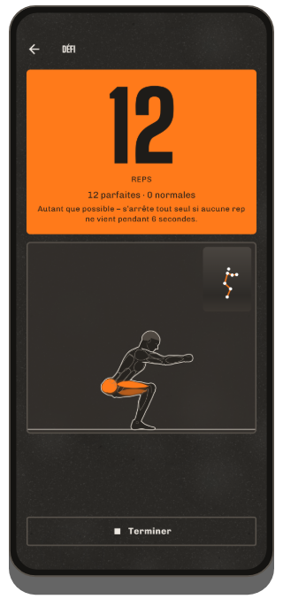
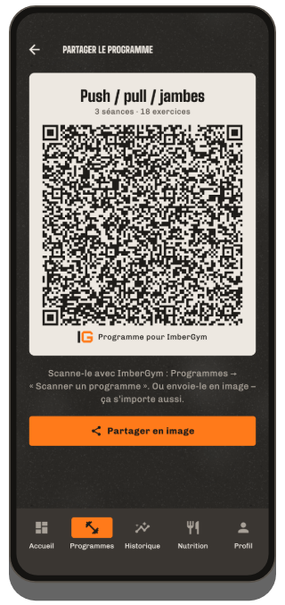

Entraîne-toi.
Suis-toi.
Progresse.
ImberGym est ton carnet d’entraînement pour la salle, la maison et le plein air : programmes, exercices animés, records et statistiques, plus des sorties GPS avec Trackshow, la nutrition et les compléments. Sans compte, sans cloud : tes données restent sur ton téléphone.

Ce que fait ImberGym
Programmes et modèles
Tes propres programmes avec séances, séries, répétitions et temps de repos, ou des modèles prêts à l’emploi : du full body débutant au push/pull/jambes, en passant par la callisthénie et le yoga. Durée estimée en direct pour chaque séance.
Partager un programme par QR code
Tout le programme tient dans un QR code : ton partenaire d’entraînement le scanne et l’a aussitôt. Sans serveur, sans compte.
Séance en cours
Un exercice par page, les dernières valeurs préremplies, suggestions de progression, supersets, réglages de machine mémorisés. Minuteur de repos aussi sur l’écran verrouillé : désactivable, avec le signal de ton choix (gong, cloche, sifflet…) et vibration en option.
Exercices animés
Chacun des 259 exercices montre son mouvement avec une figure, les muscles sollicités, le tempo et des conseils de technique.
Records
Charge maximale, 1RM estimé, volume, répétitions, distance et allure : « Nouveau record ! » juste après la série.
Statistiques et carte du corps
Semaine, mois ou 3 mois avec l’évolution, répartition par groupe musculaire, carte du corps avec récupération, progression par exercice et bilans de la semaine et de l’année à partager. Toutes les séances par mois, filtrables par programme et par exercice.
Fréquence cardiaque de la montre et de la ceinture
ImberGym récupère la fréquence cardiaque de ta montre pour chaque séance via Health Connect. Avec une ceinture cardio Bluetooth, tu la vois en direct pendant l’effort, avec zones cardiaques et repos selon le pouls.
Plusieurs salles
Ajoute les lieux où tu t’entraînes : ImberGym reconnaît où tu es au démarrage et affiche la salle dans ton historique et dans le calendrier.
Corps
Poids et masse grasse avec moyenne sur 7 jours, aussi directement depuis ta balance via Health Connect. Photos de progression avec modèle superposé pour garder la même pose et comparaison avant/après ; les photos restent dans l’appli.
Nutrition
Plus de 1 200 aliments hors ligne, ajoutés en un geste. Scanner de code-barres (Open Food Facts), recettes avec calcul des portions et objectif de calories dynamique selon ton activité, au choix. Désactivable entièrement.
Compléments
Tes propres produits avec quantité habituelle, bouton « Pris », calendrier et rappels les jours de ton choix, sans suggestion de dosage.
Calendrier, sauvegarde et import
Séances dans le calendrier de l’appareil si tu veux. Sauvegarde pour changer de téléphone, import depuis Strong et Hevy, export CSV.
Tabata et fractionné
Tabata, HIIT, 30/30 ou EMOM : en démarrage rapide ou en bloc dans ton programme. Grand compte à rebours et signal avant chaque changement, même téléphone verrouillé.
ImberGym en images







En plein air
Enregistrement GPS
Course, vélo, randonnée : distance, allure ou vitesse et dénivelé grâce au baromètre. L’enregistrement continue écran éteint, se met en pause aux feux et reprend tout seul après un arrêt.
Trackshow
Ta sortie en survol caméra sur des courbes de niveau, avec des temps forts comme le passage le plus raide, le point culminant et le kilomètre le plus rapide, à partager en image story ou en vidéo.
Export GPX
Chaque enregistrement s’exporte en fichier GPX et s’ouvre dans d’autres applis.
Gratuit et Premium
Gratuit
- Séances complètes avec minuteur de repos
- Jusqu’à 5 programmes et 5 exercices personnels, tous les modèles
- Base d’exercices avec animations
- Historique, records, statistiques, bilan de la semaine et de l’année
- Fréquence cardiaque de la montre via Health Connect, ceinture cardio en direct avec zones et repos selon le pouls
- Compléments avec rappels, défi avec compteur de répétitions par caméra
- Suivi des calories avec catalogue d’aliments et code-barres, poids
- Transmettre des programmes par QR code, partager des séances en carte
Premium
- Programmes et exercices personnels illimités, importer des programmes par QR code
- Carte du corps, récupération, évolution de la masse grasse et du poids
- Fractionné (Tabata et plus)
- Plein air avec GPS, Trackshow en vidéo
- Appli pour la montre (Wear OS)
- Salles, cartes de membre, photos de progression
- Toutes les recettes, objectif de calories dynamique
1,99 € par mois, 14,99 € par an ou un paiement unique de 29,99 € (à vie, prix de lancement ; ensuite 39,99 €) via Google Play : essai gratuit de 7 jours après ta première séance.
Questions fréquentes
Ai-je besoin d’un compte ?
Non. ImberGym fonctionne sans inscription et sans serveur propre.
Où sont stockées mes données ?
Uniquement sur ton téléphone. Pas de cloud, pas de publicité, pas d’analyse. Plus de détails dans la politique de confidentialité.
L’appli fonctionne-t-elle hors ligne ?
Oui. Seules deux choses utilisent Internet : la recherche d’un code-barres inconnu sur Open Food Facts et le nom du lieu d’une sortie GPS (le point de départ est alors envoyé au service de localisation d’Android). Tout le reste fonctionne hors ligne.
Comment la fréquence cardiaque de ma montre arrive-t-elle dans ImberGym ?
Via Health Connect, le stockage des données de santé d’Android. Dans l’appli de ta montre, active Health Connect et autorise « Fréquence cardiaque » : c’est possible entre autres avec Samsung Health, Garmin Connect, Fitbit, Polar Flow, Withings et Zepp (Amazfit). Touche ensuite « Charger la FC de la montre » dans les détails de la séance dans ImberGym. Huawei : Huawei Health n’écrit pas dans Health Connect ; l’appli « Health Sync » (Play Store) peut transférer les données : source Huawei Health, destination Health Connect, sélectionne « Fréquence cardiaque ». Astuce : lance aussi une séance sur la montre pour qu’elle mesure en continu.
Quelles ceintures cardio fonctionnent ?
Toute ceinture cardio Bluetooth avec le profil standard de fréquence cardiaque, p. ex. Polar H9/H10, Garmin HRM-Dual ou Wahoo TICKR. Associe-la une fois dans le profil, sous « Ceinture cardio et zones » : elle se connecte ensuite toute seule à chaque séance.
Comment partager un programme ?
Dans l’éditeur du programme, touche l’icône QR et montre le code ou envoie-le en image. L’autre personne le scanne dans l’onglet « Programmes » avec « Scanner un programme », aussi depuis une image. Tout le programme est dans le code, rien n’est envoyé en ligne.
Nouveau téléphone : que deviennent mes données ?
Dans le profil, sous « Données et sauvegarde », crée une sauvegarde et enregistre-la p. ex. sur Google Drive. Sur le nouveau téléphone, choisis « Nouveau téléphone ? Restaurer une sauvegarde » sur le premier écran.
Je viens de Strong ou Hevy : puis-je récupérer mes séances ?
Oui. Importe l’export CSV de ton ancienne appli sous « Données et sauvegarde » → « Importer des séances ». ImberGym associe les exercices et affiche d’abord un aperçu.
Mes photos de progression sont-elles envoyées en ligne ?
Non. Elles sont stockées dans un dossier privé de l’appli, n’apparaissent pas dans la galerie et sont même exclues des sauvegardes Android.
Puis-je masquer la nutrition ?
Oui. Toute la section se désactive dans le profil : ImberGym reste alors un pur carnet d’entraînement.
Comment supprimer mes données ?
Les entrées une par une directement dans l’appli ; tout d’un coup en désinstallant l’appli.